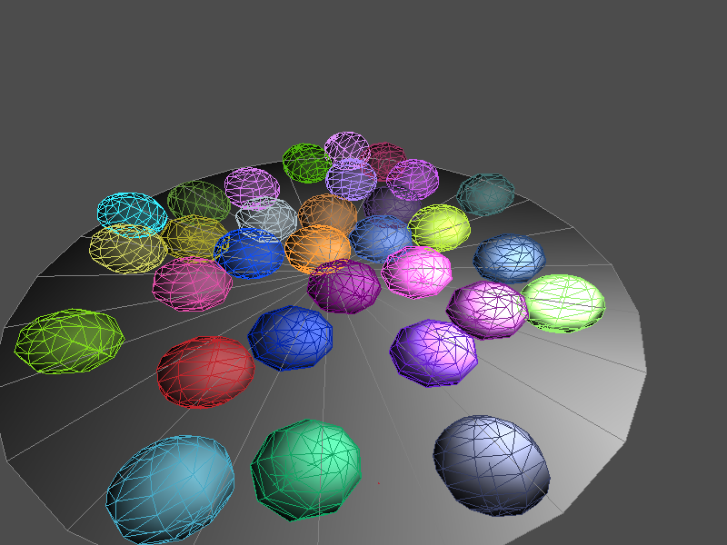
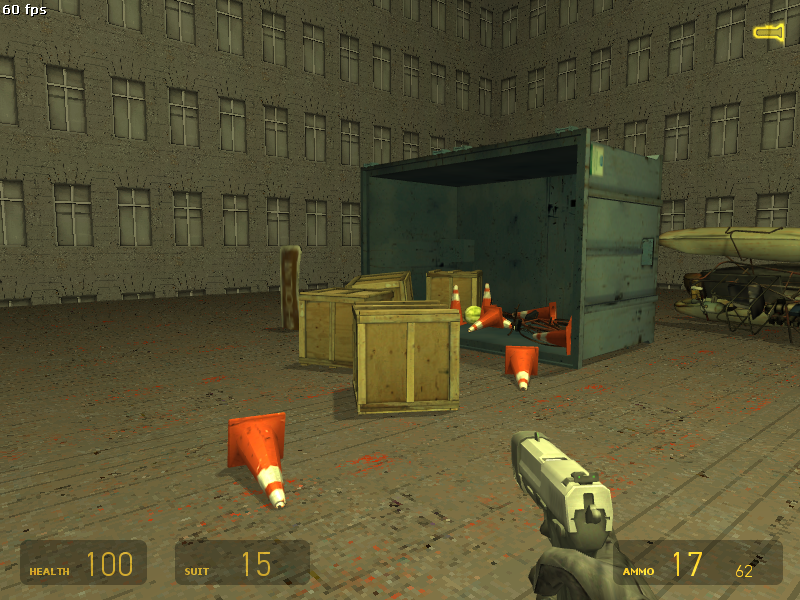
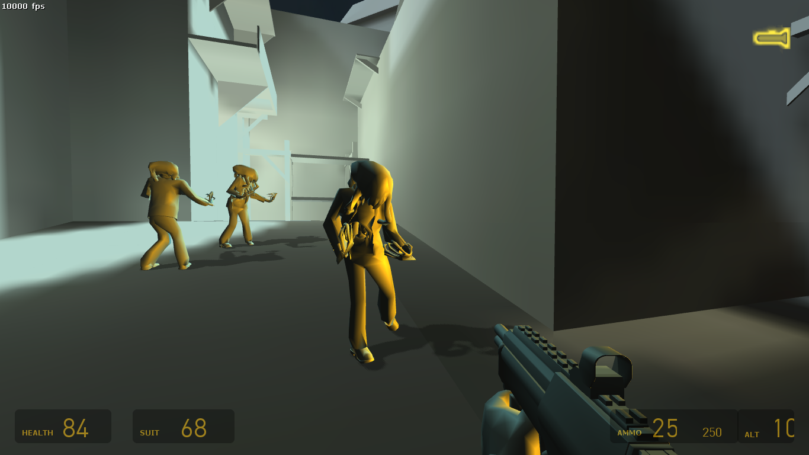

as you can probably see this is intended to be a blog site for a dude named salsatobias
i got jealous over all the cool awesomesauce and informative blogs around the internet, so i will make my own now
that means ill have to learn a bit of html, which is what im doing right now while writing this text ! learning is always fun, i think
this blog will be purely just for my nerd talk and teaching. maybe ill just discard and forget about this anyway lol
meanwhile, heres media of some stuff ive done
small c++ sdl3 program that supports launching in directx, vulkan, and opengl
also supports launching with jolt, bullet, or physx physics engines.


the euphoria tech running on jolt physics engine (not very great)

half-life 2 goldsrc project : jolt physics in the goldsrc engine and custom renderer built on top of trinity
also thought it was good idea to port source engine's studiomdl into goldsrc (dont ask me)
(oops leaked my alt-tab, who cares ! not me)

